Как пользоваться ChatGPT бесплатно
Оплачиваешь ChatGPT, Netflix, Spotify и другие подписки картой Bybit — и получаешь кэшбэк вплоть до 100% обратно. Разберём по шагам: как из РФ оформить такую карту и как ей заплатить за подписку.

Смысл простой: заводишь виртуальную карту Bybit, платишь ей за ChatGPT напрямую с официального сайта — и часть денег (а при активном использовании карты и все 100%) возвращается кэшбэком. Плюс это просто рабочий способ платить за ChatGPT из России, когда родная карта не проходит.
Гайд максимально подробный — веду за руку. Регистрация карты, оплата подписки, куда какие цифры вбивать. Сохраняй и повторяй по шагам.
1. В чём фишка и что такое Bybit
Bybit — это крупная криптобиржа. Кроме торговли крипты, она выпускает свою карту MasterCard, которой можно платить где угодно: в интернете, в магазинах, через Apple Pay / Google Pay. Карта берёт деньги прямо со счёта твоего аккаунта Bybit.
Главная выгода — кэшбэк. За обычные траты возвращается 2–10%, а за подписки на популярные сервисы (ChatGPT, Netflix, Spotify, Claude, Amazon Prime и др.) при активном использовании карты — вплоть до 100%, то есть подписка выходит в ноль. Точные условия честно разберём в разделе 6, чтобы без сюрпризов.
2. Что понадобится
- Загранпаспорт РФ — подойдёт для верификации.
- VPN — включённый на устройстве (страна не Россия). Держи его включённым на всех шагах.
- Почта и/или номер телефона не из РФ — российский номер не подойдёт для привязки.
- Немного USDT (криптовалюта) или деньги на пополнение — чтобы было чем платить со счёта.
- Казахстанский адрес (можно взять любой реальный адрес в Казахстане) — вводить латиницей.
3. Регистрация карты Bybit — по шагам
Оформить карту несложно — идём строго по порядку. Держи включённый VPN (страна не Россия) на всех шагах.
Часть А. Регистрируем аккаунт Bybit
Открой Bybit и нажми «Регистрация»
На первом экране две кнопки — «Вход» и «Регистрация». Нажимаешь оранжевую «Регистрация».
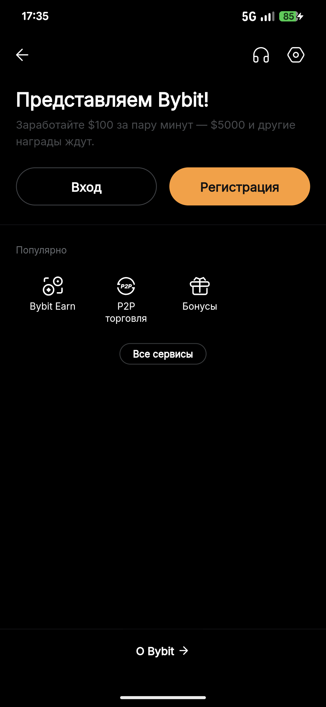
Укажи страну и почту
Сверху выбери страну — Казахстан. Ниже впиши почту (или зарегистрируйся через Google), поставь галочку согласия и жми «Зарегистрироваться». Поле «Реф. код» заполнять не нужно, если пришёл по ссылке выше.
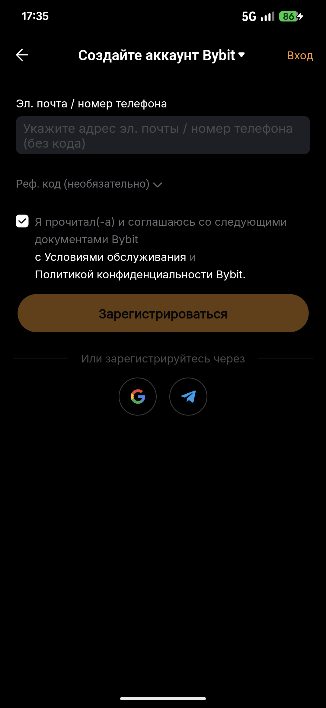
Выбери свой уровень
Спросят, знаком ли ты с криптой: «Я только знакомлюсь с криптовалютами» (простая версия Lite) или «Мне уже знаком мир криптовалют» (Pro). Выбирай, что ближе — для оплаты подписок годится любой, новичку проще Lite.
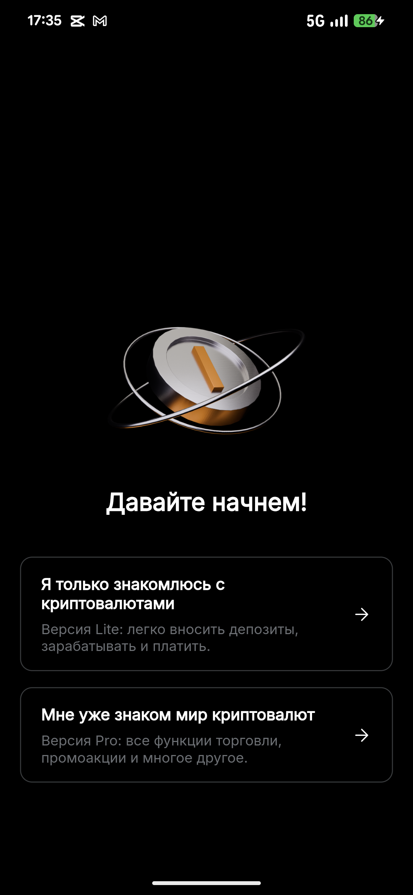
Пропусти приветствие
Появится экран «Добро пожаловать в Bybit». Жми «Пропустить» в правом верхнем углу — откроется главный экран.
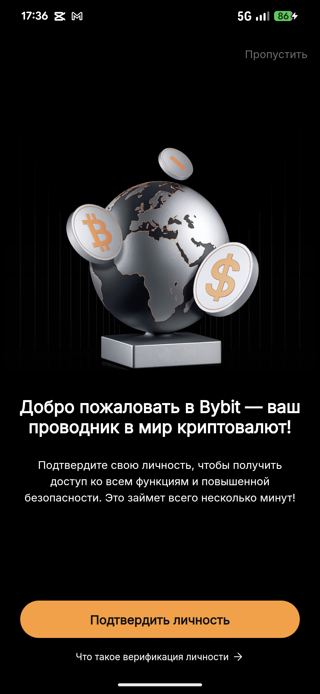
Часть Б. Оформляем карту
Оформи карту Bybit
Заходишь в раздел карты и жмёшь «Оформить карту». Тут же видно условия: кэшбэк 2–10%, мгновенная виртуальная карта, без годовых комиссий.
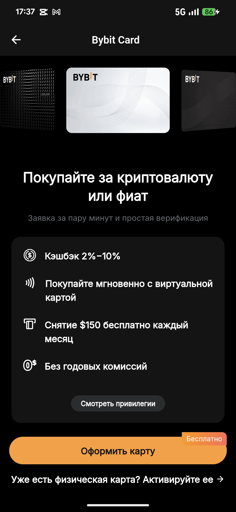
Подтверди личность
Откроется «Заявление на карту». Страна проживания — Казахстан. Видно, какие документы принимаются (паспорт подходит). Жмёшь «Подтвердить».
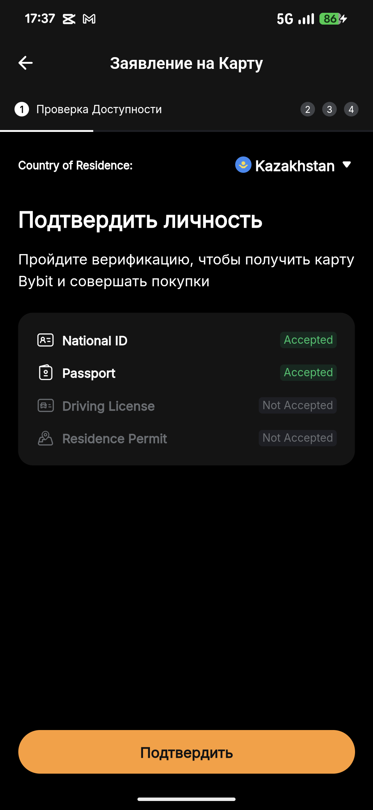
Выбери документ и пройди верификацию
Выбираешь тип документа и следуешь подсказкам (фото документа + селфи). По исходной инструкции для верификации подходит российский паспорт.
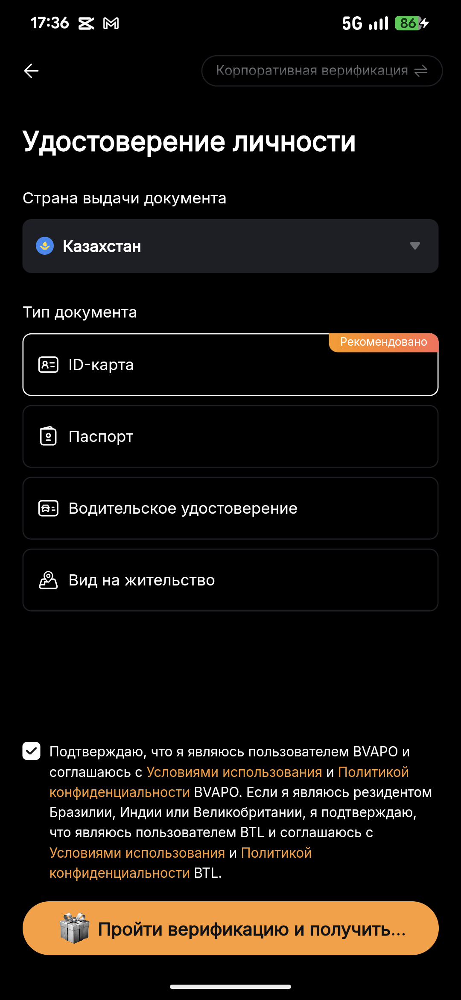
4. Пополнение счёта
У карты Bybit нет отдельного баланса — она берёт деньги со счёта твоего аккаунта. Значит, счёт надо пополнить. Способов много:
- P2P-площадка — купить USDT у другого человека (часто удобнее всего).
- Покупка крипты в один клик — прямо на бирже.
- Криптоперевод — если USDT уже есть на другом кошельке.
Для оплаты ChatGPT достаточно закинуть немного USDT — с запасом на стоимость подписки и небольшую комиссию.
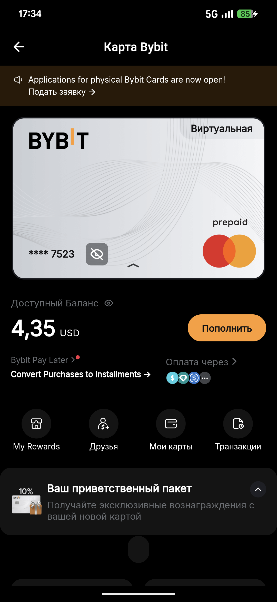
5. Оплата подписки ChatGPT
Карта готова, счёт пополнен. Теперь платим за подписку. VPN держим включённым.
Найди реквизиты своей карты
У виртуальной карты все данные лежат в личном кабинете Bybit (раздел «Карта»): номер карты, срок действия и CVV (три цифры). Нажми на значок «глаз» на карте, чтобы показать скрытые цифры — их и будем вводить.
Открой оплату в ChatGPT
Заходишь на официальный сайт chatgpt.com под своим аккаунтом → Upgrade / Оформить Plus. Откроется окно оплаты.
Впиши данные карты
В форме оплаты вводишь по полям — берёшь всё из реквизитов карты Bybit (шаг 1):
| Поле в ChatGPT | Что вводить |
|---|---|
| Card number / Номер карты | 16 цифр номера карты Bybit |
| Expiration / Срок (MM/YY) | месяц и год из реквизитов |
| CVC / CVV | три цифры с обратной стороны (в кабинете) |
| Name on card / Имя | имя латиницей, как на аккаунте |
| Country / Страна | Казахстан (Kazakhstan) |
| Address / Адрес, индекс | тот же казахстанский адрес латиницей |
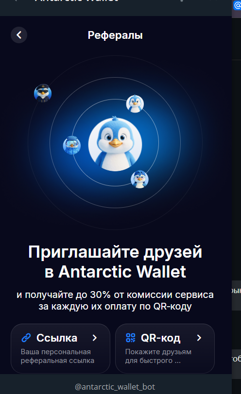
Подтверди оплату
Жмёшь оплатить. Со счёта Bybit спишется сумма подписки (плюс небольшая комиссия конвертации). Подписка активна — рядом с аккаунтом появится Plus.
6. Кэшбэк 100%: как это работает на самом деле
Это самая важная часть — читай медленно, объясняю на пальцах. «100% кэшбэк» звучит как «всё бесплатно», но у него есть два ограничителя. Разберёмся, чтобы ты точно понимал, сколько реально вернётся, и не разочаровался.
Что такое кэшбэк простыми словами
Кэшбэк — это когда часть потраченных денег возвращается тебе обратно. Заплатил картой Bybit за подписку — часть суммы (а иногда и вся) падает обратно на твой счёт Bybit. Возвращают в USDT — это криптовалюта, привязанная к доллару: 1 USDT ≈ 1 $.
Ограничитель №1 — уровень и оборот по карте
У карты есть уровни: Base, Beta, Alpha, Apex, Omega, Infinite. Чем выше уровень — тем больше кэшбэк и тем больше можно вернуть за подписки. Уровень зависит от того, сколько ты тратишь картой за месяц (или от VIP-статуса на бирже). Чтобы включился 100% на подписки, нужен минимум Beta. Вот официальная таблица из приложения:
| Уровень | Нужен оборот в месяц* | Кэшбэк на покупки |
|---|---|---|
| Base | $0 | 2% |
| Beta | $500 (или VIP 1–2) | 2% |
| Alpha | $3 500 (или VIP 3) | 4% |
| Apex | $9 500 (или VIP 4) | 6% |
| Omega | $12 500 (или VIP 5) | 8% |
| Infinite | $25 000 | 10% |
* оборот — это сколько ты потратишь картой за месяц; он поднимает уровень на следующий месяц.
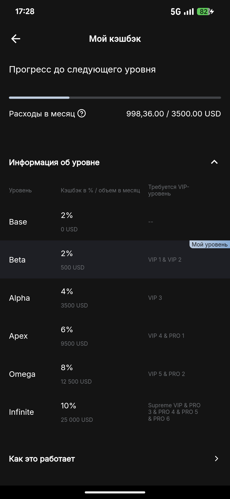
Ограничитель №2 — месячный потолок
Даже с Tier 2 кэшбэк не бесконечный. У каждого уровня свой потолок — сколько максимум вернут за месяц. И потолок этот общий: и на подписки, и на обычные покупки вместе.
| Уровень | Потолок кэшбэка в месяц |
|---|---|
| Tier 1 (Base) | $5 |
| Tier 2 (Beta) — реально открыть новичку | $50 |
| Tier 3 (Alpha) | $150 |
| Tier 4 (Apex) | $250 |
| Tier 5 (Omega) | $400 |
| Tier 6 (Infinite) | $600 |
Считаем на реальных примерах
| Что покупаешь | Нужный уровень | Сколько вернётся |
|---|---|---|
| ChatGPT Plus — $20 | Beta (потолок $50) | все $20 ✅ |
| Claude Max — $200 | Beta (потолок $50) | только $50 ❌ |
| Claude Max — $200 | Apex (потолок $250) | все $200 ✅ |
Что можно оплачивать со 100% кэшбэком
В списке — ChatGPT (OpenAI) и Claude, а также Netflix, Spotify, Amazon Prime, TradingView и другие. Логотипы видно прямо в приложении Bybit:
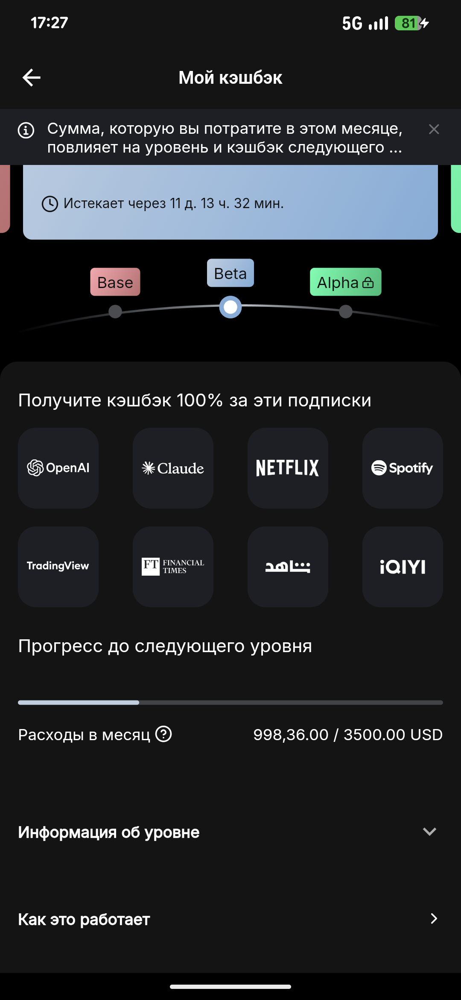
Ещё важные нюансы — прочитай обязательно
- Только официальный сайт сервиса. Кэшбэк дают, если купил подписку прямо на chatgpt.com, claude.ai и т.д. Через посредников и перекупов — не считается.
- Обычно только месячные подписки. Например, у TradingView годовой план в акцию не входит, только помесячный.
- Потолок общий на месяц. Если выбрал лимит обычными покупками — на подписку кэшбэка уже не хватит.
- Возврат в USDT — не рублями, а криптой на счёт Bybit.
- Список сервисов меняется. Сейчас участвуют ChatGPT, Claude, Netflix, Spotify, Amazon Prime, TradingView и другие — перед покупкой сверься со списком на сайте.
7. Комиссии и лимиты
Обслуживание карты бесплатное, даже если ей долго не пользоваться. Основные комиссии:
| Операция | Комиссия |
|---|---|
| Обмен фиата | 2% |
| Перевод криптовалюты в фиат | 0,9% |
| Снятие наличных (свыше $100/мес) | 2% |
Лимиты по тратам: до $1000 за операцию, до $5000/день, $25 000/месяц, $150 000/год. Для оплаты подписок этого с огромным запасом.
8. Безопасность и важные оговорки
- Защити аккаунт Bybit. Сложный уникальный пароль + двухфакторная аутентификация в настройках. Периодически меняй пароль.
- Не держи крупные суммы на бирже. Основные средства — на аппаратном (холодном) кошельке, а на Bybit держи только на повседневные траты.
- Следи за актуальными условиями. Bybit может менять комиссии, лимиты и правила кэшбэка. Проверяй перед крупными действиями.
9. С чего начать
- Включи VPN, зарегистрируйся на Bybit, пройди KYC 1 уровня.
- Оформи виртуальную карту на Казахстан (раздел 3).
- Закинь немного USDT на счёт.
- Оплати ChatGPT на официальном сайте данными карты (раздел 5).
Дальше — просто пользуешься. А если гоняешь картой активно, подписки начинают возвращаться кэшбэком.
 Оформил карту — открыл себе весь мир сервисов.
Оформил карту — открыл себе весь мир сервисов.